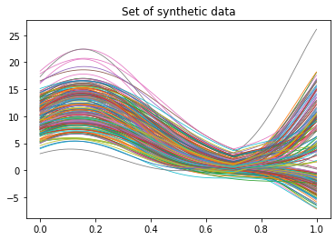
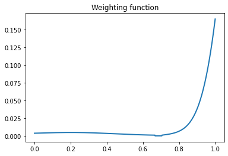

FunSparse¶
Method Description¶
Sparse Functional K-means Clustering is an advanced clustering technique designed for functional data, such as time series or curves. It extends traditional K-means clustering by incorporating sparsity to select the most relevant features of the data for clustering, enhancing interpretability and accuracy.
Functional Data Representation
Each observed curve is represented in a continuous form, ensuring the data are suitable for clustering.
Sparsity Constraint
A sparsity constraint is introduced to select the most relevant parts of the domain, controlled by a parameter m that specifies the measure of the domain where the weighting function is zero.
Optimization Problem
The clustering problem is formulated as a variational problem, maximizing the weighted between-cluster sum of squares (BCSS) subject to the sparsity constraint.
Iterative Algorithm
An iterative algorithm is used to solve the optimization problem. The algorithm alternates between:
Weighting Function Update: Given the current clustering, the optimal weighting function is computed using the solution to the variational problem. This step identifies the most relevant parts of the domain for clustering.
Clustering Update: Given the weighting function, the optimal clustering is found by applying a functional K-means clustering algorithm, where the distance between functions is weighted according to the weighting function.
Parameter Tuning
The sparsity parameter m is tuned using a permutation-based GAP statistics approach to determine the optimal level of sparsity.
Visualization and Interpretation
The results are visualized through estimated cluster mean functions and the weighting function, highlighting the most discriminative parts of the domain.
Function¶
This method provides three core functions: sparse_sim_data, sparse_bifunc and FDPlot.sparse_fdplot. In this section, we detail their respective usage, as well as parameters, output values and usage examples for each function.
sparse_sim_data¶
sparse_sim_data generates simulated data according to the FunSparse model, and a true clustering result.
sparse_sim_data(n, x, paramC, plot = False)
Parameter¶
Parameter |
Description |
|---|---|
n |
integer, the number of observations or curves to generate for each cluster. |
x |
array, the domain over which the functional data is defined. This is typically a set of points (e.g., time points or spatial coordinates) where the functional data is observed. |
paramC |
numeric, a parameter that controls the overlap between the two clusters. It specifies the proportion of the domain where the mean functions of the two clusters are identical. |
plot |
bool, whether to plot the generated data. Default is False. |
Value¶
The function sparse_sim_data outputs a matrix contains simulated data, and a sequence contains true clustering result.
data: array, a simulated data generated by FunSparse model.
cluster: array, true clustering results.
If plot=True, a visualization of simulated data will be displayed.
{kind=link}
Example¶
from BiFuncLib.simulation_data import sparse_sim_data
paramC = 0.7
n = 100
x = np.linspace(0, 1, 1000)
sparse_simdata = sparse_sim_data(n, x, paramC)['data']
sparse_bifunc¶
sparse_bifunc performs model fitting.
sparse_bifunc(data, x, K, method = 'kmea', true_clus = None)
Parameter¶
Parameter |
Description |
|---|---|
data |
array, the functional data to be clustered. This is typically a 2D array where each column represents a functional observation. |
x |
array, the domain over which the functional data is defined. This is typically a set of points (e.g., time points or spatial coordinates) where the functional data is observed. |
k |
integer, the number of clusters to form. |
method |
str, the clustering method to use, ‘pam’, ‘hier’ or ‘kmea’. Default is ‘kmea’. |
true_clus |
numeric or None, The true cluster labels. If known, the Classification Error Rate (CER) will be calculated to evaluate the clustering performance. |
Value¶
The function sparse_bifunc outputs a dict including clustering results and the value of CER (if true_clus=True).
- result: dict, clustering results for FunSparse model, including:
cluster: array, indicates the cluster assignment for each data point.
iteration: integer, the number of iterations the algorithm has run.
obj: numeric, the value of the objective function.
w: array, weighting function used in sparse clustering.
CER: numeric, the Classification Error Rate (CER).
Example¶
from BiFuncLib.simulation_data import sparse_sim_data
from BiFuncLib.sparse_bifunc import sparse_bifunc
K = 2
paramC = 0.7
n = 100
x = np.linspace(0, 1, 1000)
sparse_simdata = sparse_sim_data(n, x, paramC)['data']
part_vera = sparse_sim_data(n, x, paramC)['cluster']
sparse_res = sparse_bifunc(sparse_simdata, x, K, true_clus = part_vera)
FDPlot.sparse_fdplot¶
FDPlot.sparse_fdplot visualizes the result generated by pf_bifunc function.
FDPlot(result).sparse_fdplot(x, data)
Parameter¶
Parameter |
Description |
|---|---|
result |
dict, a clustering result generated by sparse_bifunc function. |
x |
array, the domain over which the functional data is defined. This is typically a set of points (e.g., time points or spatial coordinates) where the functional data is observed. |
data |
array, the functional data to be clustered. This is typically a 2D array where each column represents a functional observation. |
Value¶
The function outputs two graphs.
The first image represents the outcomes of applying sparse functional K-means clustering to functional datasets, with each curve corresponding to a data point and different colors indicating distinct clusters.

The second image illustrates the weighting function resulting from the sparse clustering algorithm, highlighting the critical portions of the data domain that are essential for cluster differentiation.
{kind=link}
Example¶
from BiFuncLib.simulation_data import sparse_sim_data
from BiFuncLib.sparse_bifunc import sparse_bifunc
from BiFuncLib.FDPlot import FDPlot
K = 2
paramC = 0.7
n = 100
x = np.linspace(0, 1, 1000)
sparse_simdata = sparse_sim_data(n, x, paramC)['data']
part_vera = sparse_sim_data(n, x, paramC)['cluster']
sparse_res = sparse_bifunc(sparse_simdata, x, K, true_clus = part_vera)
FDPlot(sparse_res).sparse_fdplot(x, sparse_simdata)